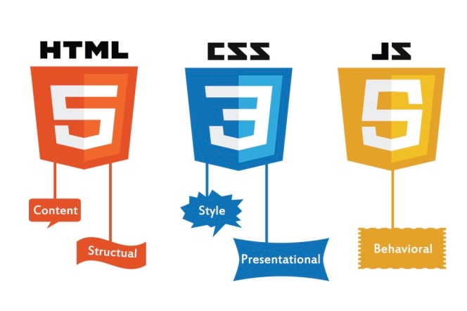

Background
I grew up in Radlett, Hertfordshire with my parents and two younger sisters.
I went to the
local
primary school and then to two different Jewish secondary schools in North London. I studied
Economics and Politics with North American Studies at Leeds University and spent my third year of
that course studying at the University of Toronto in Canada.
Since leaving university, I have
settled in London - first in Hendon and now Edgware.
Family
I met my wife, Roz, at university when we were both 19 (she is two days older than me!). At 24 we
moved in together and at 28 we married. We have a wonderful daughter, Amy, who is
12.
Roz
is a fluent French speaker (she studied it at university) and currently works part-time for the
Catholic Church in their property department. Her previous career (pre-Amy) was as a project manager
for the civil service.
Amy is just about to go into Year 8 of secondary school (JCoSS). She has also
just celebrated her Bat Mitzvah (Jewish coming of age celebration). Outside school she loves to
pursue dancing, singing and drama.
Hobbies/Interests
My primary hobby is cycling and all the tech and stats that go with it. I have cycled 4000+ miles
this year so far and by the time you read this I should have completed an additional 1000 miles
cycling end to end of the country (Land's End to John o'Groats).
I love the stats and tech
that can
go along with cycling. When riding, I measure my heart rate, power, cadence, speed and location
(GPS). All this is uploaded to Strava.
Off the
bike, I also wear an Apple Watch to measure my exercise/workouts and I measure my
sleep with a gadget under my mattress (Beddit)!
Aside from all that, I have managed to
accumulate a number of categories on my driving licence. I am qualified to ride/drive a
motorcycle,
car and rigid lorry (I failed my articulated lorry test three times!).
Experience
I have worked in technology in the banking sector since leaving university. First for HSBC, then
Morgan Stanley and finally Deutsche Bank, where I have been since 2007. In the middle of all of
that,
I had a short stint as a lorry driver (hence the lorry licence)!
The first part of my career was
primarily hands-on and technical using various technologies (VB, Java, C#, SQL) and the second half
has been focused more on project and team management and business analysis. For more details of my
career history, see my LinkedIn profile.
Motivation
My happiest times in my career were when I was writing code which provided a very direct line of
sight to the delivery of value to the business. Until this
opportunity with _nology (Deutsche Bank Tech Accelerator Programme) was offered, I never thought there
was an avenue back into a technical
career for me.
I am excited to be able to throw myself into learning new skills and technologies
with similarly motivated colleagues, and to reset my career as a software engineer.
